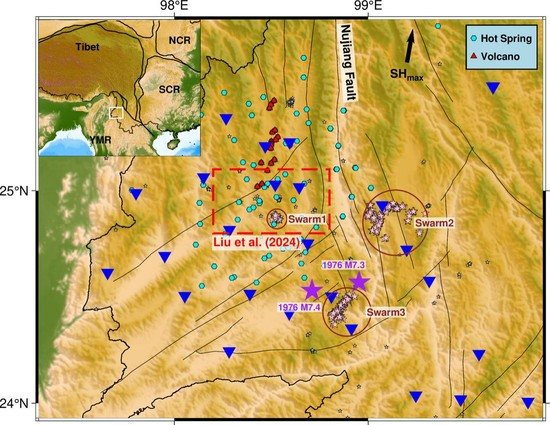

Seismicity
Swarms, slow slip & fibre sensing
Small earthquakes record processes that large ones hide: fluid pressure migrating along faults, slow slip that loads a future rupture, afterslip that drives aftershocks. We build dense catalogues with template matching and machine-learning phase picking, relocate them, and read those processes from how the seismicity moves in space and time.
Fluid-driven swarms
Noto Peninsula, Japan
A four-year swarm preceded the 2024 Mw 7.5 Noto earthquake. Comparing the pore-pressure evolution of the swarm with Coulomb stress changes from the 2023 Mw 6.3 sequence suggests that high pore pressure played a larger role in triggering the mainshock than elastic stress transfer. After the mainshock the drivers of aftershocks vary in space: static stress changes dominate early in the southwest, migrating afterslip in the southwest and centre, and localised afterslip in the northeast. Swarm cessation in the central zone points to poroelastic rebound after the pressure was released, consistent with cyclic fault valving (Mohanna et al., 2026, EPSL).
Tengchong Volcanic Field, SE Tibetan Plateau
A 12-month dense broadband deployment revealed three swarms on pre-existing faults, including conjugate systems and sharp fault bends rather than only classic stepovers; two lie in previously unstudied areas east and southeast of the volcanic zone. Migration fronts and back fronts follow pore-pressure diffusion, and the swarms show localised stress heterogeneity (Ma et al., 2026, Tectonophysics).

Relocated catalogues in three dimensions
Dense catalogues show the structures that the swarms and aftershocks light up. The Noto catalogue combines template matching with GrowClust relocation; the Türkiye catalogue covers eight months of the 2023 sequence; the Hawaiʻi catalogue of the 2026 Mw 5.9 South Kona earthquake and the concurrent Pāhala swarm was built from continuous data with a machine-learning workflow (PhaseNet, REAL, HYPOINVERSE, hypoDD). Drag to rotate; press play to see the events appear in time order.
Relocated seismicity
CataloguesNoto: Mohanna et al. (2026) EPSL, Supplementary File 1 (random subset of 25,000 of 138,889 events). Türkiye: Mohanna et al., eight-month template-matching catalogue, data doi:10.5281/zenodo.18504095, paper in preparation (random subset of 25,000 of 229,651). Hawaiʻi: preliminary relocations, manuscript in preparation, not peer reviewed; magnitudes are network ML.
Foreshocks, slow slip and afterslip
Matched-filter detection and repeating earthquakes let us follow aseismic slip before and after large earthquakes.
- Repeating earthquakes in the foreshock sequence of the 2014 Mw 8.2 Iquique earthquake migrated toward the mainshock hypocentre, pointing to a large slow-slip event on the megathrust before the mainshock; their recurrence times show different slip behaviour on different segments (Meng et al., 2015, EPSL).
- Before the 2015 Mw 8.4 Illapel earthquake, seismicity and aseismic slip accelerated around the future epicentre (Huang & Meng, 2018, GRL); afterwards, early aftershocks expanded together with afterslip (Huang et al., 2017, EPSL).
- Matched filtering recovered missing events before and after the 2015 Gorkha earthquake, including a rise in seismicity rate a few days before the mainshock (Huang et al., 2016, Tectonophysics).
- Foreshocks of the 2019 Ridgecrest earthquakes evolved in space and time before the M 7.1 mainshock (Huang et al., 2020, EPSL), and the stress field changed during the sequence (Sheng & Meng, 2020, GRL).
- Deep (15–50 km) slow-slip events at convergent margins can be modelled as slip in a viscoplastic shear zone (Yin, Xie & Meng, 2018, EPSL).
Distributed acoustic sensing
DAS turns optical-fibre cables into seismic arrays with a sensor every few metres, and the data volumes are large. A compressive-sensing workflow applied to the Milun Fault (MiDAS) project in Taiwan compresses the data by a factor of at least 15 while the reconstructed earthquake records remain usable by standard algorithms, and runs detection directly on the compressed data. Compared with other compression schemes on eight datasets, it works best for high signal-to-noise, event-oriented applications (Ma, Meng & Lin, 2026, GJI, accepted).
Key papers
- 2026Distributed Acoustic Sensing data compression for seismological applications via compressive sensingGeophysical Journal International (accepted)
- 2026Earth and Planetary Science Letters 690, 120113
- 2026
- 2018Geophysical Research Letters 45
- 2015Earth and Planetary Science Letters 411, 177–187